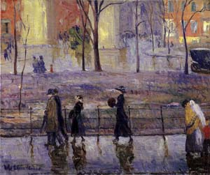
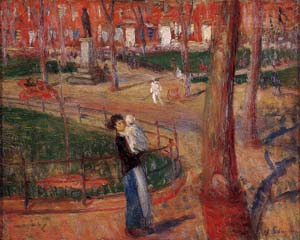
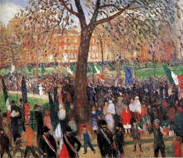

by Maggie Stenz
|
During the first decades of the twentieth century, Robert Henri and his circle of Ashcan realists became known for their crusading efforts to reconnect art and life. Eschewing allegorical themes, depictions of upper-class leisure, society portraiture, and the aesthetic movement, they instead depicted daily life in the urban metropolis- street culture, popular entertainments, new immigrants, and the working class. Works such as George Luks’s Allen Street (1905; Hunter Museum of American Art), George Bellows’s Forty-Two Kids (1907; Corcoran Gallery of Art),
In contrast to these depictions of immigrant communities as the home of timeless and unchanged Old World cultures, a series of paintings by William Glackens reveals the collision between cultures, the daily tensions and difficulties of assimilation as immigrants negotiate the physical and psychical boundaries of past and present, old and new, European immigrant and American citizen. My subject here is this process of Americanization, which is recorded in Glackens’s Washington Square series, a group of paintings and pastels executed roughly between 1910 and 1912.1 This mixing of cultures took place in Washington Square, which had long been known as home to New York’s wealthiest and most exclusive families. By the end of the nineteenth century, however, many of New York’s upper crust had already moved uptown, and record immigration began taking its toll on the neighborhood as once stately brownstones gradually, but steadily, gave way to tenements. Midnight breadlines began forming at the elegant Vienna Bakery on Tenth Street, and new factories and sweatshops brought smoke, noise, and congestion to the once quiet area.2 In 1892 Marianne Griswold Van Rensselaer described the neighborhood’s contrast of rich and poor and the indifference of the haves to the have-nots: “A couple of miles uptown in Washington Square, where . . . there are many tramps, . . a sprinkling of baby wagons and white-capped nurses; for this is the boundary-line between very poor and crowded and very well-to-do and roomy streets of homes– South Fifth Avenue, with its teeming French, German, Irish, and negro population, ending against one of its sides, and the true Fifth Avenue starting from another.”3 Washington Square and the surrounding streets became the site of an uneasy coexistence between old and new residents. These competing claims to the square were signaled by two major public monuments, both memorializing national heroes– the Washington Arch, built at the square’s northern edge in 1892 to commemorate the centennial of George Washington's inauguration, and the bronze sculpture of Guiseppe Garibaldi, erected at the eastern side in 1888 to memorialize the legendary soldier who led the war for Italian unification.  Ostensibly picturesque scenes of the park’s casual strollers, Glackens’s Washington Square paintings also betray evidence of the public interaction of individuals from diverse ethnic and class background.4For example, in March Day, Washington Square (1912; private collection), a colorful impression of the square just after a light rain, an immigrant woman, marked by her bright yellow shawl, stands apart from a fashionably dressed group of promenaders walking by her in the opposite direction.  The most spectacular works of the series– both in terms of their visual richness and their narrative and symbolic content– are two paintings depicting the Columbus Day celebration, Parade, Washington Square (Whitney Museum of American Art) and Italo-American Celebration, Washington Square (Museum of Fine Arts, Boston), both painted around 1910. In these paintings, the square is taken over by the Italians and the process of Americanization is brought to the fore. By participating in the patriotic spectacle of the Columbus Day parade, Italian immigrants are transformed into American citizens by celebrating the Italian sailor who discovered America. Parade, Washington Square is a distant view of the procession as it enters the square from beneath the Washington Arch. Five men wearing top hats and tails, white gloves, and ceremonial red, white, and green sashes walk in formation directly in front of large Italian and American flags. Up ahead are more flags behind a soldier on horseback and an open carriage conveying more top-hatted, sashed men. The crowd lining the parade route, though which we glimpse the parade, seems to be composed mainly of men wearing dark suits and hats, with several women visible in lighter colored costumes. The spectators are orderly and respectful; the atmosphere is hushed, a moment frozen in time. Italo-American Celebration takes a closer look at the square. On Washington Square South, individual spectators energetically gather in anticipation of the parade’s approach. Among them are men dressed in dark suits, bowler hats, and tricolor sashes; some wearing the luxuriant mustaches favored by Italian men, others holding large Italian or American flags. Children in knickers and overalls wander about; one enjoying a brisk business selling small flags. Women and children line the sidewalk; most sport fashionable ready-made dresses, though others are clothed in large head scarves, aprons, and full skirts brought from the Old Country. In the background the crowd is a blur of color as it zigzags through the park. The dynamic and spirited gathering suggests the excitement of the parade, the rich visual spectacle of color and movement, the din of the music, the roar of the crowd. While for Americans today Columbus Day has largely lost most of its original symbolism, yet in the nineteenth century the explorer was viewed as one of America’s most revered historical figures. Columbus had long been heroized in music, literature, theater, paintings, and just about every other imaginable medium. The pinnacle of his popularity coincided with the 1893 World’s Columbian Exposition in Chicago, where he was associated with America’s industrial, economic, social, and cultural progress. Over the next two decades he took on even more symbolic meaning as many Americans developed a more personal identification with him. By 1909, when Columbus Day was made a legal holiday in the state of New York, the sailor had become a vital role model for a number of ethnic and religious groups, including Catholics, Jews, Spaniards, and Italians, all of whom claimed Columbus as one of their own. Yet for Italian-Americans, who comprised the largest group of immigrants living in Manhattan in 1910,6 and who were especially active in the effort to legalize the holiday, Columbus held a special significance as the country’s first immigrant and an authentic “American” hero. Not surprisingly, many Americans associated Columbus Day with Italian-Americans. For example, in 1909 the New York Times reported that some 30,000 men and 300 Italian societies participated in what they called “the most brilliant parade ever given by Italians in this city.” That year Italian paraders included 200 bicyclists with wheels and handle bars decorated with tricolor ribbons; marines and sailors of the Italian battleship Etruria marching with fixed bayonets; and a long line of marchers including boys dressed as Zouaves and girls wearing red, white, and green. In 1911, when crowds were treated to a spectacular military parade that included mounted police, state militia, sailors from warships in port, and Spanish-American War veterans, still the “chief feature” of the parade, according to the Evening Post, was the Italian contingent, which took up the rear behind Italian community leader Marshal James E. March, on horseback.7 In general, New York’s Italian immigrants tended to settle in groups with others from their native town or provinceÑfor example, the Neapolitans and Calabrians in Mulberry Bend, Genoese in Baxter Street, Sicilians in Elizabeth Street, and Piedmontese and Lombards West of Broadway.8They also organized societies according to these groupings, naming them after local community leaders or patron saints whose feast days they celebrated with rowdy street festivals. In contrast to these remnants of Old World practices, the annual Columbus Day parade transcended local customs, served to unify the city’s Italian community as a whole, and demonstrated the Italians’ ability to participate in orderly, proper, middle-class American civic events. Columbus became a symbol of ethnic pride for the Italians, fusing past and present, Old World and New, and easing the ambivalence of the immigrants’ dual identity. Most important through their participation in a citywide patriotic parade on a holiday celebrated nationwide, the Italians showed their willingness and enthusiasm to embrace America’s history and culture and, thus, to be considered American citizens. Glackens’s paintings implicitly recognize the assimilationist function of the parade in a number of small details. For example, by the contrast of colorfully garbed greenhorns with more fashionably-dressed second-generation immigrants, and by the prominent display in both pictures of side-by-side Italian and American flags. More important these scenes are specifically oriented toward the Italians, when they were only one part of a large and diverse procession. Glackens depicted not the many large floats, the multitude of soldiers, sailors, marching bands, or boy scouts, nor any of the thousands of men marching under the banners of the Catholic Benevolent Legion or the Knights of Columbus, but the Italians. Furthermore, Glackens significantly chose to depict not the thousands of colorfully costumed marching and folk-dancing Italian children, nor the multitude of working men marching with their fraternal organizations, but Italian leaders, stalwart and important citizens, riding in a carriage, on horseback, and leading the colors, proceeding through a line of orderly and respectful onlookers. Glackens’s nod to class mobility is important. At a time when American values and patriotism was demonstrated by adherence to societal norms, a display of material progress demonstrated immigrants’ desire and ability to transcend their immigrant origins and to participate in mainstream society. Italians are seen here as respectable American citizens, people who should not be relegated to the streets of Little Italy, but who have a passionate interest in participating in American life and its democratic institutions, and who could make significant contributions to American life.9 Just as immigrants were eager to demonstrate their interest in American history and customs, many public officials and reformists all over the country similarly believed that civic celebrations helped educate immigrants about American history and culture, encouraging them to abandon their old ways and instilling a sense of patriotism, loyalty, and civic identity in them. Interestingly, many well-intentioned organizers of these events encouraged the participation of new immigrants, yet they often assigned them to inferior or picturesque roles only, thereby negating the contributions of immigrant groups to the community.10 Glackens’s works, however, do not share in this condescending and one-way attitude. Similar to his earlier parade scenes executed for the New York Herald, a double-page illustration of the McKinley inaugural parade (March 5, 1897) and a depiction of the huge military parade at the dedication of Grant’s Tomb (April 28, 1897) , Glackens’s Columbus Day parades emphasize qualities associated with solid citizenship and law-abiding patriotism. In contrast, John Sloan’s Italian Procession, New York (1913-25; San Diego Museum of Art) portrays a small group of Italians meandering through a narrow streetÑan Italian religious festival as a colorful and quaintly exotic custom.11 Italo-American Parade shows more movement and energy than the distant view of Parade, revealing a larger variety of ages, genders, and types and placing more focus on the ethnicity of the figures through clothing, gesture, and facial features; yet this more individual focus is directed not on the primitive naivete of the new immigrants but on their sheer energy, unbounded enthusiasm, and eager anticipation for the parade and for their countryman Columbus. During Glackens’s lifetime and long after his death, the Washington Square scenes have been widely praised for their brilliant color, their shimmering brushstrokes, and their convincing effects of rain, snow, and other atmospheric conditions. Yet this formalist bias, which excluded any discussion of subject matter, has severely limited our more complete understanding of these pictures. Glackens’s Washington Square paintings are significant not only for their marvelous handling of paint, but also because they reveal in important ways, the ongoing negotiation of class and ethnic identity in early-twentieth-century America. First, Italian-Americans in particular, and immigrants in general, were searching for a better life in a new country, slowly assimilating into mainstream society, and forging a new identity as American citizens while still celebrating their ethnic culture. Second, Glackens’s negotiation of a realistic portrayal of urban life and immigrant culture, one which reveals rather than ignores the tensions between people of diverse ethnic and economic backgrounds as the newcomers assimilate into mainstream culture. These overlapping issues are encapsulated in the Washington Square scenes, and are triumphantly symbolized by the colorful spectacle of Italian-American paraders emerging from beneath the Washington Arch. Perhaps more than any other space in the city, Washington Square symbolized both the past and the future, and the endless possibilities of New York’s immigrant communities. |
|